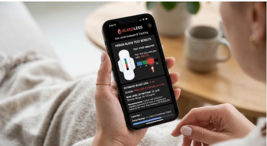
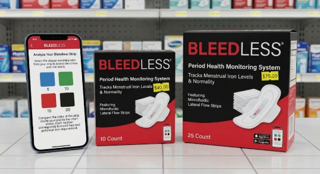

Volume 5
Blue
- Flow
- Very light
- Iron
- Normal
Pad strip + phone app · concept
BleedLess pairs a sanitary pad with a color indicator strip. Collect a sample, wait one minute, then look at the strip and match its color in the app. The app tells you your flow volume and what it may mean for your iron.


How it works
The strip does the sensing and you do the reading in the app.
Use a clean sanitary pad that has the color indicator strip attached.
Let a little flow reach the strip so blood can start traveling down its channel.
The color needs time to develop. Looking too early shows a lighter color than the strip will settle on.
See the strip’s color through the clear layer on the back, then match it to the color key in the app. The app shows your flow volume and iron outlook.
Inside the pad
The strip is a microfluidic lateral flow strip tucked between the layers of the pad. Blood travels down it and changes its color.
Color key
The shade your strip turns maps to a flow volume and an iron outlook.
Try it
This demo works like the app. Look at your strip, choose the color that matches it, and see the result.
Green means light flow and a good iron outlook. The result on the phone is an example of what the app would show.
The outlook is an estimate from flow volume and color. It is not a diagnosis and it does not measure your hemoglobin.
Estimates only. Not a medical diagnosis.
History
Each result is saved with its color, so you can see whether your flow and iron outlook are steady or drifting. This is example data.
| Date | Strip | Volume | Flow | Iron outlook |
|---|---|---|---|---|
| Oct 3, day 2 | Green | 10 | Light | Good |
| Sep 5, day 2 | Red | 15 | Moderate | Monitor |
| Aug 8, day 2 | Red | 15 | Moderate | Monitor |
| Jul 11, day 2 | Green | 10 | Light | Good |
| Jun 13, day 2 | Blue | 5 | Very light | Normal |
What to expect
The strip color gives a flow volume reading each time you compare, and the app keeps the history.
The app links flow to an iron outlook: normal, good, monitor or check. It is a guide to when to look closer.
Only a blood test shows your iron status. If the app says monitor or check, ask a clinician about one.
Questions
A microfluidic lateral flow strip attached to the pad. Blood travels down a microscopic channel in the strip and turns it color along the way. The farther it travels, the more fluid the pad absorbed, and the final color tells the app roughly how much flow there was.
The color takes time to develop. Looking too early shows a lighter shade than the strip will settle on, which could give a lower reading.
No. It estimates flow from the strip color and gives an iron outlook based on that. A blood test is the way to measure iron or hemoglobin.
Not yet. This page describes a concept. It has no regulatory clearance and cannot be bought.